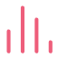
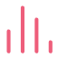

统计数据 |
0 总记录数 |
 |
0 特征因子字段数 |
0 筛选字段数 |
|---|
统计数据 |
0 总记录数 |
 |
0 特征因子字段数 |
0 筛选字段数 |
|---|
准确度： |
0% 测试集准确度 |
0% 训练集准确度 |
| 详细指标 | precision | recall | score | support |
|---|---|---|---|---|
| 无付费选座 | 0.51 | 0.81 | 0.63 | 2444 |
| 付费选座 | 0.88 | 0.65 | 0.75 | 5424 |
| accuracy | / | / | 0.70 | 7868 |
| macro avg | 0.70 | 0.73 | 0.69 | 7868 |
| weighted avg | 0.77 | 0.70 | 0.71 | 7868 |
| 详细指标 | precision | recall | score | support |
|---|---|---|---|---|
| 无付费选座 | 0.51 | 0.81 | 0.63 | 9923 |
| 付费选座 | 0.88 | 0.64 | 0.74 | 21547 |
| accuracy | / | / | 0.69 | 31470 |
| macro avg | 0.70 | 0.73 | 0.68 | 31470 |
| weighted avg | 0.76 | 0.69 | 0.71 | 31470 |